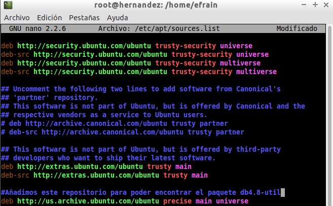
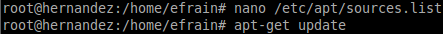
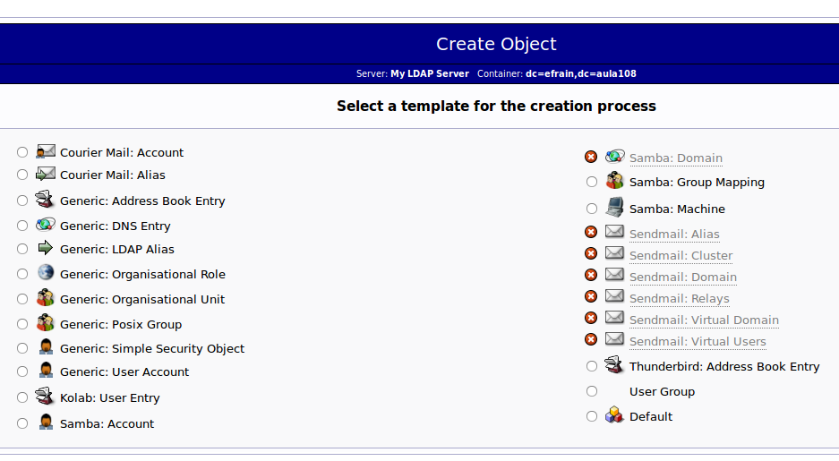

- Módulo: Sistemas Operativos
- Título del trabajo Servidor LDAP
- Componentes del grupo: Efraín Hernández Morales
- Curso Académico: 2014/2015
- Fecha de entrega: 2 de Noviembre de 2014
Para el servidor LDAP utilizaremos una máquina virtual con sistema operativo Linux. Para evitar posibles problemas externos, lo pondremos como red interna.
Además, le pondremos una ip estática.
Guardamos y actualizamos.
Tras configurar la máquina virtual, ahora procedemos a instalar el Servidor LDAP. Ejecutamos "apt-get install slapd db4.8-util ldap-utils" en la terminal como superusuario.
Como vemos nos indica que no puede encontrar las dependencias para instalarlo. Lo que haremos para solucionarlo será añadir los respositorios necesarios en "/etc/apt/sources.list".
Actualizamos los respositorios con un "apt-get update".
Finalmente, lo encuentra y ya podemos instalarlo.
Durante la instalación ya nos pide configurar el servidor ldap. El primer paso es añadir la contraseña del servidor para el administrador.
Seguidamente, rechazamos la configuración inicial para la base de datos del servidor ldap.
Ahora, añadimos el nombre de mi dominio que se corresponderá con "efrain.aula108", por lo que quedará como "dc=efrain,dc=aula108".
Introducimos el nombre de la organización y su respectiva contraseña.
En el motor de la base de datos, elegimos la Berkeley DB (BDB).
Berkeley DB (BDB) es una librería multiplataforma escrita en C que proporciona una base de datos embebida de alto rendimiento para datos de tipo clave/valor. Soporta miles de threads o procesos accediendo simultáneamente a las bases de datos, que pueden llegar a ocupar hasta 256 terabytes. No es una base de datos relacional ni soporta SQL ni cliente-servidor. Tampoco tiene conocimiento sobre el formato de los datos que almacenamos en ella, sino que se le suministran pares clave/valor y los almacena byte a byte tal cual se los pasamos.
Añadimos que no se borre la base de datos.
Activamos que se mueva la base de datos para evitar que se produzcan errores en el proceso de condiguración de "/var/lib/ldap" a la hora de crear una nueva base de datos.
No permitimos el protocolo Ldap v2.
Tras finalizar, reiniciamos el servidor ldap.
Por último, antes de finalizar la configuración, editamos el hostname y añadimos el hosts correspondiente a nuestra máquina.

Reiniciamos el servidor para que se guarden los cambios y verificamos su estado en el equipo.
Para instalar esta herramienta y que pueda funcionar antes debemos tener instalado apache y php.
Ahora, procederemos a instalar la herramienta cliente PHPLDAPAdmin. Para esto, ejecutamos el comando "sudo apt-get install phpldapadmin".
Tras esto, vamos a nuestro navegador y ejecutamos nuestra herramienta mediante "localhost/phpldapadmin".
Iniciamos sesión...
Como vemos, inicia sesión de forma correcta pero claro las bases de datos que se encuentran del ldap son las que vienen por defecto 'dc=example,dc=com'. Para arreglar esto, editamos el "config.php" de phpLDAPadmin que se encuentra en "/etc/phpldapadmin/config.php". Después en la línea 300 del archivo, modifican lo siguiente por sus datos:
Tras arreglar este problema, ya podemos iniciar sesión y empezar a introducir datos en nuestro servidor ldap. Para ello vamos a "Create Object" y primeramente crearemos las unidades organizativas "grupos" y "usuarios".
Una vez que hemos creado las unidades organizativas, procedemos a crear los grupos "profesores" y "alumnos" que estarán dentro de "ou=grupos". Vamos dentro de "ou=grupos" y le damos a "Create object".
El siguiente paso es la creación de usuarios dentro del grupo "ou=alumnos" y "ou=profesores" pero a la hora de crear un objeto nos tilda un error en la creación de usuarios saltando este error: "Error trying to get a non-existant value (appearance,password_hash)".
Para arreglar esto, vamos al archivo de configuración '/usr/share/phpldapadmin/lib/TemplateRender.php' y editamos la línea 2469 de la siguiente forma:

Ya arreglado, vamos a la creación de usuarios. Primero, creamos los profesores:
Ahora, agregamos a los alumnos:
Y, finalmente, queda de la siguiente forma:
Ahora, instalaremos el JXplorer en otra máquina con el objetivo de navegar en nuestro servidor ldap desde otro equipo.
Seguidamente, ejecutamos el programa y ponemos los datos de nuestro servidor ldap.